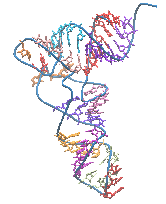

Version: tRNAscan-SE 2.0
When using this web server, please cite one of the references.
Lowe, T.M. and Chan, P.P. tRNAscan-SE On-line: Search and Contextual Analysis of Transfer RNA Genes. (Submitted) Chan, P.P., Lin, B., and Lowe, T.M. tRNAscan-SE 2.0. (In Preparation)
Example tRNA sequences
